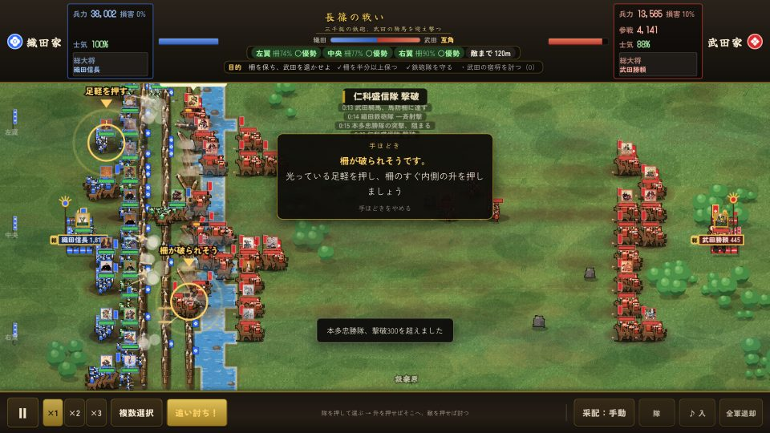

長篠の戦い 攻略
織田・徳川側は三列の馬防柵の内に鉄砲と槍を置き、騎馬を引きつけて迎え撃ちます。
交代射撃は自動で進みます。柵に来た騎馬へ〈一斉射撃〉を合わせ、予備で破れた翼を支えます。

三段撃ちの置き方
軍議の〈史実寄り〉は三列の柵・予備三隊・自由射撃100m・限定追撃。まずこの布陣を土台にします。
「三段撃ち」を狙うときも、鉄砲を柵の外へ出さず、槍を柵のすぐ内、本陣と予備を後ろへ。三列の柵と、鉄砲の交代射撃は別の仕組みです。鉄砲を三隊ずつ順番に手動で撃つ操作は要りません。
敵が初めて鉄砲の間合いに入り、射程内の鉄砲隊が二隊以上になると交代射撃が始まります。その後も装填の済んだ隊から撃ちます。
柵で止めてから騎馬を受ける順
第一波を柵で止め、接近した騎馬に〈一斉射撃〉。一斉射撃は十二秒に一度で、射程内の騎馬を優先します。遠い敵には届かないので、接近を待ちます。
前の波が柵に取り付いて時間がたつか、崩れるか、予定の時刻になると次の波が来ます。第二波・第三波にも柵の内から射撃を続け、早い全軍突撃は避けます。
左翼・中央・右翼の柵の残りを確認。突破された所へ槍と予備を回し、鉄砲が白兵戦に巻き込まれるのを防ぎます。山県隊の翼からの回り込みにも備えます。
鳶ヶ巣山と追撃
酒井の別働隊を送ると、先に鳶ヶ巣山砦の奇襲を遊び、その成否が決まってから設楽原の本戦が始まります。主戦線の予備まで使い切らず、砦の攻防と設楽原の迎撃を分けて考えます。
敵が崩れて〈追い討ち！〉が出てから追撃を判断します。本陣が押されている間は迎撃を優先。武田側で遊ぶなら、薄い翼の柵へ足軽を当て、破れてから騎馬を通します。
よくある問い
三段撃ちは手動で三列を交代させる？
交代射撃は自動です。鉄砲を柵の内で守らせ、敵が射程に入るのを待ちます。一斉射撃は十二秒に一度、近づいた騎馬に合わせます。